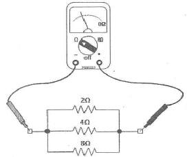
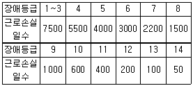

자동차정비기능사 (2014-07-20 기출문제)
1과목: 자동차공학
1. 스로틀 밸브의 열림 정도를 감지하는 센서는?
- APS
- CKPS
- CMPS
- TPS
(정답률: 88%)

2. 120ps의 디젤기관이 24시간 동안에 360L의 연료를 소비하였다면, 이 기관의 연료소비율은( g/PS·h)은? (단, 연료의 비중은 0.9이다.)
- 약 125
- 약 450
- 약 113
- 약 513
(정답률: 47%)
3. 기회기식과 비교한 전자제어 가솔린 연료분사장치의 장점으로 틀린 것은?
- 고출력 및 혼합비 제어에 유리하다.
- 연료 소비율이 낮다.
- 부하변동에 따라 신속하게 응답한다.
- 적절한 혼합비 공급으로 유해 배출가스가 증가된다.
(정답률: 81%)
4. 배기밸브가 하사점 전 55°에서 열리고 상사점 후 15°에서 닫혀 진다면 배기밸브의 열림각은?
- 70°
- 195°
- 235°
- 250°
(정답률: 67%)
5. 소형 승용차 기관의 실린더 헤드를 알루미늄 합금으로 제작하는 이유는?
- 가볍고 열전달이 좋기 때문에
- 부식성이 좋기 때문에
- 주철에 비해 열팽창 계수가 작기 때문에
- 연소실 온도를 높여 체적효율을 낮출 수 있기 때문에
(정답률: 85%)
6. 피스톤 재료의 요구 특성으로 틀린 것은?
- 무게가 가벼워야 한다.
- 고온 강도가 높아야 한다.
- 내마모성이 좋아야 한다.
- 열팽창 계수가 커야 한다.
(정답률: 79%)
7. 4행정 V6기관에서 6실린더가 모두 1회의 폭발을 하였다면 크랭크축은 몇 회전 하였는가?
- 2회전
- 3회전
- 6회전
- 9회전
(정답률: 72%)
8. 가솔린 기관의 이론 공연비는?
- 12.7 : 1
- 13.7 : 1
- 14.7 : 1
- 15.7 : 1
(정답률: 86%)
9. 배기가스가 삼원 촉매 컨버터를 통과할 때 산화·환원되는 물질로 옳은 것은?
- N2, CO
- N2, H2
- N2, O2
- N2, CO2,H2O
(정답률: 76%)
10. 바이널리 출력방식의 산소센서 점검 및 사용 시 주의사항으로 틀린 것은?
- O2센서의 내부저항을 측정치 말 것
- 전압 측정 시 디지털 미터를 사용 할 것
- 출력 전압을 쇼트 시키지 말 것
- 유연 가솔린을 사용할 것
(정답률: 61%)
11. 엔진오일의 유압이 낮아지는 원인으로 틀린 것은?
- 베어링의 오일 간극이 크다.
- 유압조절밸브의 스프링 장력이 크다.
- 오일 팬 내의 윤활유 양이 적다.
- 윤활유 공급 라인에 공기가 유입되었다.
(정답률: 69%)
12. 자동차의 구조·장치의 변경승인을 얻은 자는 자동차 정비업자로부터 구조·장치의 변경과 그에 따른 정비를 받고 얼마 이내에 구조변경검사를 받아야 하는가?
- 완료일로부터 45일 이내
- 완료일로부터 15일 이내
- 승인받은 날부터 45일 이내
- 승인받은 날부터 15일 이내
(정답률: 75%)
13. 기관이 지나치게 냉각되었을 때 기관에 미치는 영향으로 옳은 것은?
- 출력저하로 연료소비율 증대
- 연료 및 공기흡입 과잉
- 점화불량과 압축과대
- 엔진오일의 열화
(정답률: 62%)
14. 디젤기관에서 연료 분사시기가 과도하게 빠를 경우 발생할 수 있는 현상으로 틀린 것은?
- 노크를 일으킨다.
- 배기가스가 흑색이다.
- 기관의 출력이 저하된다.
- 분사압력이 증가한다.
(정답률: 55%)
15. 다음 중 단위 환산으로 틀린 것은?
- 1J=1N·m
- -40℃=-40°F
- -273℃= 0K
- 1kgf/cm2 = 1.42PSi
(정답률: 53%)
16. 예혼합(믹서)방식 LPG기관의 장점으로 틀린 것은?
- 점화플러그의 수명이 연장된다.
- 연료펌프가 불필요하다.
- 베이퍼 록 현상이 없다.
- 가솔린에 비해 냉시동성이 좋다.
(정답률: 63%)
17. 스텝 모터 방식의 공전속도 제어장치에서 스탭 수가 규정에 맞지 않은 원인으로 틀린 것은?
- 공전속도 조정 불량
- 메인 듀티 S/V고착
- 스로틀 밸브 오염
- 흡기다기관의 진공누설
(정답률: 62%)
18. 배기장치(머플러) 교환 시 안전 및 유의사항으로 틀린 것은?
- 분해 전 촉매가 정상 작동온도가 되도록 한다.
- 배기가스 누출이 되지 않도록 조립한다.
- 조립 할 때 가스켓은 신품으로 교환한다.
- 조립 후 다른 부분과의 접촉여부를 점검한다.
(정답률: 74%)
19. 디젤 노크를 일으키는 원인과 직접적인 관계가 없는 것은?
- 압축비
- 회전속도
- 옥탄가
- 엔진의 부하
(정답률: 74%)
20. 4행정 기관과 비교한 2행정 기관(2 stroke engine)의 장점은?
- 각 행정의 작용이 확실하여 효율이 좋다.
- 배기량이 같을 때 발생동력이 크다.
- 연료 소비율이 적다.
- 윤활유 소비량이 적다.
(정답률: 61%)
2과목: 자동차정비 및 안전기준
21. 연소실 압축압력이 규정 압축압력보다 높을 때 원인으로 옳은 것은?
- 연소실내 카본 다량 부착
- 연소실내에 돌출부 없어짐
- 압축비가 작아짐
- 옥탄가가 지나치게 높음
(정답률: 64%)
22. 흡기매니폴드 내의 압력에 대한 설명으로 옳은 것은?
- 외부 펌프로부터 만들어진다.
- 압력은 항상 일정하다.
- 압력변화는 항상 대기압에 의해 변화한다.
- 스로틀 밸브의 개도에 따라 달라진다.
(정답률: 67%)
23. 산소센서 신호가 희박으로 나타날 때 연료계통의 점검사항으로 틀린 것은?
- 연료필터의 막힘 여부
- 연료펌프의 작동전류 점검
- 연료펌프 전원의 전원강하 여부
- 릴리프 밸브의 막힘 여부
(정답률: 58%)
24. 전자제어 제동장치(ABS)의 구성요소가 아닌 것은?(오류 신고가 접수된 문제입니다. 반드시 정답과 해설을 확인하시기 바랍니다.)
- 휠 스피드 센서
- 하이드롤릭 모터
- 프리뷰센서
- 하이드롤릭 유닛
(정답률: 71%)
25. 브레이크 계통을 정비한 후 공기빼기 작업을 하지 않아도 되는 경우는?
- 브레이크 파이프나 호스를 떼어 낸 경우
- 브레이크 마스터 실린더에 오일을 보충한 경우
- 베이퍼 록 현상이 생긴 경우
- 휠 실린더를 분해 수리한 경우
(정답률: 64%)
26. 사이드 슬립테스터의 지시 값이 4m/km일 때 1km 주행에 대한 앞바퀴의 슬립 량은?
- 4mm
- 4cm
- 40cm
- 4m
(정답률: 62%)
27. 종감속 장치에서 하이포이드 기어의 장점으로 틀린 것은?
- 기어 이의 물림 율이 크기 때문에 회전이 정숙하다.
- 기어의 편심으로 차체의 전고가 높아진다.
- 추진축의 높이를 낮게 할 수 있어 거주성이 향상된다.
- 이면의 접촉 면적이 증가되어 강도를 향상시킨다.
(정답률: 63%)
28. 전자제어 현가장치에서 사용하는 센서에 속하지 않는 것은?
- 차속센서
- 차고센서
- 스로틀 포지션센서
- 냉각수 온도센서
(정답률: 61%)
29. 타이어의 표시 235 55R 19에서 55는 무엇을 나타내는가?
- 편평비
- 림 경
- 부하 능력
- 타이어의 폭
(정답률: 79%)
30. 자동변속기의 유압제어 기구에서 매뉴얼 밸브의 역할은?
- 선택 레버의 움직임에 따라 P, R, N, D등의 각 레인지로 변환 시 유로 변경
- 오일펌프에서 발생한 유압을 차속과 부하에 알맞은 압력으로 조정
- 유성 기어를 차속이나 엔진 부하에 따라 변환
- 각 단 위치에 따른 포지션을 컴퓨터로 전달
(정답률: 69%)
31. 제어 밸브와 동력 실린더가 일체로 결합된 것으로 대형트럭이나 버스 등에서 사용되는 동력조향장치는?
- 조합형
- 분리형
- 혼성형
- 독립형
(정답률: 65%)
32. 브레이크 장치에 관한 설명으로 틀린 것은?
- 브레이크 작동을 계속 반복하면 드럼과 슈에 마찰열이 축적되어 제동력이 감소되는 것을 페이드 현상이라 한다.
- 공기 브레이크에서 제동력을 크게 하기 위해서는 언로더 밸브를 조절한다.
- 브레이크 페달의 리턴스프링 장력이 약해지면 브레이크 풀림이 늦어진다.
- 마스터 실린더의 푸시로드 길이를 길게 하면 라이닝이 수축하여 잘 풀린다.
(정답률: 65%)
33. 자동변속기 차량에서 토크컨버터 내부의 오일 압력이 부족한 이유 중 틀린 것은?
- 오일펌프 누유
- 오일쿨러 막힘
- 입력축의 씰링 손상
- 킥다운 서브스위치 불량
(정답률: 67%)
34. 유효 반지름이 0.5m인 바퀴가 600rpm으로 회전할 때 차량의 속도는 약 얼마인가?
- 약 10.987km/h
- 약 25km/h
- 약 50.92km/h
- 약 113.04km/h
(정답률: 38%)
35. 제동장치에서 편제동의 원인이 아닌 것은?
- 타이어 공기압 불 평형
- 마스터 실린더 리턴 포트의 막힘
- 브레이크 패드의 마찰계수 저하
- 브레이크 디스크에 기름 부착
(정답률: 57%)
36. 전동식 전자제어 조향장치 구성품으로 틀린 것은?
- 오일펌프
- 모터
- 컨트롤 유닛
- 조향각 센서
(정답률: 61%)
37. 유압식 동력전달장치의 주요 구성부 중에서 최고 유압을 규제하는 릴리프 밸브가 있는 곳은?
- 동력부
- 제어부
- 안전 점검부
- 작동부
(정답률: 53%)
38. 수동변속기 정비시 측정 할 항목이 아닌 것은?
- 주축 엔드플레이
- 주축의 휨
- 기어의 직각도
- 슬리브와 포크의 간극
(정답률: 59%)
39. 변속기 내부에 설치된 증속장치에 대한 설명으로 틀린 것은?
- 기관의 회전속도를 일정수준 낮추어도 주행속도를 그대로 유지한다.
- 출력과 회전수의 증대로 윤활유 및 연료 소비량이 증가한다.
- 기관의 회전속도가 같으면 증속장치가 설치된 자동차 속도가 더 빠르다.
- 기관의 수명이 길어지고 운전이 정숙하게 된다.
(정답률: 54%)
40. 앞바퀴의 옆 흔들림에 따라서 조향 휠의 회전축 주위에 발생하는 진동을 무엇이라 하는가?
- 시미
- 휠 플러터
- 바우킹
- 킥업
(정답률: 70%)
3과목: 안전관리
41. 완전 충전된 납산축전지에서 양극판의 성분(물질)으로 옳은 것은?
- 과산화 납
- 납
- 해면상납
- 산화물
(정답률: 72%)
42. 기관에 설치 된 상태에서 시동 시(크랭크 시) 기동전동기에 흐르는 전류와 회전수를 측정하는 시험은?
- 단선시험
- 단락시험
- 접지시험
- 부하시험
(정답률: 64%)
43. R-12의 염소(Cl)로 인한 오존층 파괴를 줄이고자 사용하고 있는 자동차용 대체 냉매는?
- R-134a
- R-2a
- R-16a
- R-12a
(정답률: 83%)
44. 도어 록 제어(door lock control)에 대한 설명으로 옳은 것은?
- 점화스위치 ON 상태에서만 도어를 unlock으로 제어한다.
- 점화스위치를 OFF로 하면 모든 도어 중 하나라도 록 상태일 경우 전 도어를 록(lock)시킨다.
- 도어 록 상태에서 주행 중 충돌 시 에어백 ECU로부터 에어백 전개신호를 입력받아 모든 도어를 unlock시킨다.
- 도어 unlock상태에서 주행 중 차량 충돌 시 충돌센서로부터 충돌정보를 입력받아 승객의 안전을 위해 모든 도어를 잠김(lock)으로 한다.
(정답률: 67%)
45. 그림과 같이 측정했을 때 저항 값은?

- 14Ω
- 1/14Ω
- 8/7Ω
- 7/8Ω
(정답률: 52%)
46. 축전지 단자의 부식을 방지하기 위한 방법으로 옳은 것은?
- 경유를 바른다.
- 그리스를 바른다.
- 엔진오일을 바른다.
- 탄산나트륨을 바른다.
(정답률: 72%)
47. 축전기(condensor)에 저장되는 정전용량을 설명한 것으로 틀린 것은?
- 가해지는 전압에 정비례한다.
- 금속판 사이의 거리에 정비례한다.
- 상대하는 금속판의 면적에 정비례한다.
- 금속판 사이 절연체의 절연도에 정비례한다.
(정답률: 49%)
48. 가솔린기관의 점화코일에 대한 설명으로 틀린 것은?
- 1차코일의 저항보다 2차코일의 저항이 크다.
- 1차코일의 굵기보다 2차코일의 굵기가 가늘다.
- 1차코일의 유도전압 보다 2차코일의 유도전압이 낮다.
- 1차코일의 권수보다 2차코일의 권수가 많다.
(정답률: 51%)
49. IC방식의 전압조정기가 내장 된 자동차용 교류발전기의 특징으로 틀린 것은?
- 스테이터 코일 여자전류에 의한 출력이 향상된다.
- 접점이 없기 때문에 조정 전압의 변동이 없다.
- 접점방식에 비해 내진성, 내구성이 크다.
- 접점 불꽃에 의한 노이즈가 없다.
(정답률: 42%)
50. 계기판의 속도계가 작동하지 않을 때 고장부품으로 옳은 것은?
- 차속 센서
- 크랭크각 센서
- 흡기매니폴드 압력 센서
- 냉각수온 센서
(정답률: 73%)
51. 화재 발생 시 소화 작업 방법으로 틀린 것은?
- 산소의 공급을 차단한다.
- 유류 화재 시 표면에 물을 붓는다.
- 가연물질의 공급을 차단한다.
- 점화원을 발화점 이하의 온도로 낮춘다.
(정답률: 85%)
52. 드릴머신 작업의 주의사항으로 틀린 것은?
- 회전하고 있는 주축이나 드릴에 손이나 걸레를 대거나 머리를 가까이 하지 않는다.
- 드릴의 탈부착은 회전이 완전히 멈춘 다음 행한다.
- 가공 중 드릴에서 이상음이 들리면 회전상태로 그 원인을 찾아 수리한다.
- 작은 물건은 바이스를 사용하여 고정한다.
(정답률: 82%)
53. 어떤 제철공장에서 40명의 종업원이 1년간 작업하는 가운데 신체장애 등급 11급, 1급 1명이 발생하였다. 재해 강도율은 약 얼마인가? (단, 1일 8시간 작업하고, 년 300일 근무한다.)

- 10.98%
- 11.98%
- 12.98%
- 13.98%
(정답률: 51%)
54. 정밀한 기계를 수리할 때 부속품의 세척(청소)방법으로 가장 안전한 방밥은?
- 걸레로 닦는다.
- 와이어 브러시를 사용한다.
- 에어건을 사용한다.
- 솔을 사용한다.
(정답률: 79%)
55. 해머작업 시 안전수칙으로 틀린 것은?
- 해머는 처음과 마지막 작업 시 타격력을 크게 할 것
- 해머로 녹슨 것을 때릴 때에는 반드시 보안경을 쓸 것
- 해머의 사용 면이 깨진 것은 사용하지 말 것
- 해머 작업 시 타격 가공하려는 곳에 눈을 고정 시킬 것
(정답률: 80%)
56. 차량에 축전지를 교환할 때 안전하게 작업하려면 어떻게 하는 것이 제일 좋은가?
- 두 케이블을 동시에 함께 연결한다.
- 점화 스위치를 넣고 연결한다.
- 케이블 연결시 접지 케이블을 나중에 연결한다.
- 케이블 탈착시 (+)케이블을 먼저 떼어낸다.
(정답률: 71%)
57. 유압식 브레이크 정비에 대한 설명으로 틀린 것은?
- 패드는 안쪽과 바깥쪽을 세트로 교환한다.
- 패드는 좌·우 어느 한쪽이 교환시기가 되면 좌·우 동시에 교환한다.
- 패드교환 후 브레이크 페달을 2~3회 밟아준다.
- 브레이크액은 공기와 접촉 시 비등점이 상승하여 제동성능이 향상된다.
(정답률: 76%)
58. 자동차의 기동전동기 탈부착 작업 시 안전에 대한 유의사항으로 틀린 것은?
- 배터리 단자에서 터미널을 분리시킨 후 작업한다.
- 차량아래에서 작업 시 보안경을 착용하고 작업한다.
- 기동전동기를 고정시킨 후 배터리 단자를 접속한다.
- 배터리 벤트플러그는 열려있는지 확인 후 작업한다.
(정답률: 60%)
59. 실린더의 마멸량 및 내경 측정에 사용되는 기구와 관계 없는 것은?
- 버니어 캘리퍼스
- 실린더 게이지
- 외측 마이크로미터와 텔레스코핑 게이지
- 내측 마이크로미터
(정답률: 52%)
60. 하이브리드 자동차의 정비 시 주의사항에 대한 내용으로 틀린 것은?
- 하이브리드 모터 작업 시 휴대폰, 신용카드 등은 휴대하지 않는다.
- 고전압 케이블(U, V, W상)의 극성은 올바르게 연결한다.
- 도장 후 고압배터리는 헝겊으로 덮어두고 열처리한다.
- 엔진 룸의 고압 세차는 하지 않는다.
(정답률: 78%)